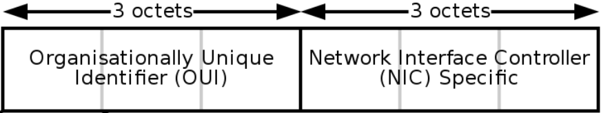
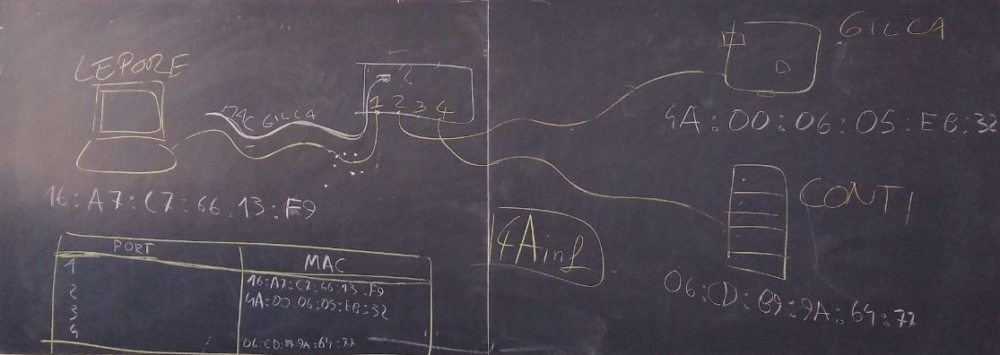

Sistemi e reti, quarto anno
A.S. 2019-2020
Istituto di Istruzione Superiore G. Marconi
Istituto tecnico, indirizzo informatico
Benvenuti ragazzi!
Questo materiale riepiloga quanto detto a lezione negli scorsi giorni.
Le risposte alle domande dei compiti in classe sono tutte incluse in questo materiale.
I riferimenti al libro di testo sono tra parentesi quadre, come ad esempio [pag. 1].
Il testo in questi box sono per approfondimento. La lettura di questo materiale non è strettamente necessaria per le verifiche, ma è consigliata per vostra cultura personale e in quanto sapere indispensabile per chi vuole diventare un informatico.
Buon studio e buon lavoro.
Data-link layer
Cominciamo le lezioni di quest'anno con un approfondimento sul livello 2 della pila ISO-OSI: il data-link layer.
Come dice il nome, il livello data-link ci assicura che ci sia un collegamento (link) che permetta di scambiare dati tra più computer. Il suo funzionamento quindi prevederà il minimo necessario per far sì che questo avvenga.
MAC Address
Per cominciare, ci dovrà essere un modo per distinguere le diverse macchine tra di loro. Come facciamo a dire che il destinatario del mio messaggio deve essere un esatto computer, e che il mittente sono proprio io? Per fare questo, il livello 2 data-link utilizza il concetto di indirizzo MAC (in inglese MAC address).
MAC è l'acronimo di Media Access Control.

Possiamo pensare al MAC come il codice fiscale della nostra interfaccia di rete, che è univoco in tutto il mondo. In altre parole, non possono esistere due interfacce di rete con lo stesso indirizzo MAC. È composto da 6 byte (48 bit), che convenzionalmente sono divisi tra loro da : (due punti). Un MAC address valido è, ad esempio, 01:02:03:ab:cd:ef.
Secondo lo standard più diffuso attualmente, i primi 3 byte del MAC identificano la casa produttrice e gli ultimi 3 l'interfaccia.
Potreste trovare anche altri separatori tra i byte del MAC address, come ad esempio il punto o il trattino. Sono meno comuni e ne sconsiglio l'uso.
Sottolineo che abbiamo detto che il MAC address è assegnato ad ogni singola interfaccia di rete e non al computer nel suo complesso. Questo perché, molto spesso, un computer ha più di una interfaccia di rete. Ad esempio uno smartphone ha l'interfaccia per la rete dati in 4G ed un'altra interfaccia per il WiFi. Ovviamente, le due interfacce avranno MAC address diversi.
Switch
Immaginiamo ora di dover connettere tre computer tra di loro. Connettiamo con un cavo Ethernet la loro interfaccia LAN ad uno switch, che ricordiamo essere un dispositivo di rete con tante porte a cui si possono collegare altrettante macchine. Lo switch, avrà quindi il compito di smistare i pacchetti al giusto destinatario.

Domanda: perché lo switch deve preoccuparsi di smistare il pacchetto solo al destinatario, e non inoltra tutto a tutti? Identifichiamo due problemi principali.
- sicurezza: non vogliamo che tutti i computer siano in grado di leggere i messaggi diretti ad altri
- traffico: vogliamo ridurre il traffico sui cavi il più possibile
Fino a qualche anno fa esistevano dei dispositivi che inoltravano tutto a tutti, si chiamavano hub, ora non sono più usati.
MAC Address Table
Il funzionamento di uno switch, almeno a livello concettuale, è abbastanza semplice. Al suo interno, lo switch salva in memoria una tabella con due colonne e tante righe quante sono le porte fisiche dello switch. Nel caso dell'esempio precedente, la MAC address table sarà la seguente.
| Port number | MAC address |
|---|---|
| 1 | 16:a7:c7:66:13:f9 |
| 2 | 4A:00:06:05:eb:32 |
| 3 | |
| 4 | 06:cd:89:9a:64:77 |
Quando lo switch riceve un pacchetto, prima di tutto assegna (se già non lo aveva fatto in precedenza) il MAC address del mittente alla porta dal quale lo ho ricevuto. Quindi controlla il MAC address del destinatario, e lo inoltra solo alla porta dove è connesso tale destinatario.
Esempio: il computer nella porta 1 ha MAC address 16:a7:c7:66:13:f9 e vuole inviare un messaggio a 06:cd:89:9a:64:77. Quando lo switch riceve il messaggio dalla porta 1, assegna 16:a7:c7:66:13:f9 a tale porta. Quindi controlla in quale riga c'è l'indirizzo del destinatario, in questo caso la porta 4, e inoltra il pacchetto solo a quella porta.
Ma all'inizio, quando accendo per la prima volta lo switch, come faccio a riempire tutta la tabella? Ci sono varie strategie.
- quando un nuovo dispositivo si connette, invia un messaggio di broadcast che ha come destinatario lo speciale indirizzo
ff:ff:ff:ff:ff:ff. Tutti i dispositivi connessi allo switch rispondono a questo messaggio, e la tabella viene riempita di conseguenza - quando lo switch non trova il destinatario di un messaggio nella tabella, inoltra il messaggio a tutti, sperando che il corretto destinatario lo riceva. Questa operazione è chiamata flooding (allagamento).
Se non è possibile consegnare il pacchetto, lo switch risponde al mittente comunicando che il destinatario non è reperibile.
Switch di livelli superiori
Il comportamento dello switch descritto fin qui è quello di uno switch "puro", ovvero che opera unicamente al livello 2 (data-link) della pila ISO/OSI. Un tale dispositivo viene chiamato anche switch L2 e non sa niente dei livelli superiori; ad esempio non sa cosa sia un indirizzo IP. È importante notare però che, al giorno d'oggi, molto spesso gli switch hanno molte funzioni ed operano anche a livelli superiori. Questo genere di dispositivi viene chiamato, in base alle caratteristiche, switch L2+, switch L2/L3 o anche switch L3.
Quindi non vi stupite se vedete un oggetto chiamato "switch" che lavora anche con IP e altro. L'importante è che sappiate orientarvi sempre correttamente e che non vi confondiate.
MAC address e sicurezza informatica
Abbiamo detto che il MAC address è univoco, associato all'interfaccia di rete. Aggiungiamo anche che non si può cambiare il MAC address scritto all'interno della scheda, perché è hard-coded al momento della fabbricazione. È possibile tuttavia camuffarlo nel momento dell'invio, in modo da fingerci qualcun altro. Questa strategia si chiama "MAC spoofing" ed ha moltissimi usi.
Hard-coding significa che un'informazione è stata scritta all'interno di un dispositivo hardware al momento della fabbricazione e non può essere cambiato durante tutta la sua vita.
Spoofing letteralmente significa "imbrogliare", ma in questo caso si tradue solitamente con camuffare.
Il MAC spoofing può servire ad attaccare un sistema per intercettare informazioni che non sarebbero dirette a noi. Oppure possiamo usarlo per impedire di essere tracciati dal nostro operatore telefonico o dal gestore del WiFi, o ancora per usare una licenza di un software che era associata ad un altro computer.
Il MAC spoofing, come molto spesso accade in informatica, non è legale od illegale di per sé. Dipende dall'uso che ne facciamo, e molto spesso il confine della legalità è molto sfumato e difficile da definire.
Network layer
Finora abbiamo visto come mettere in comunicazione fra di loro un numero relativamente piccolo di computer, ovvero quelli che possono essere connessi ad un singolo switch. Per connettere ancora più computer, potremmo mettere degli switch a cascata, collegati tra di loro: si può fare, ma al crescere dei computer e degli switch, si cominciano ad avere una serie di problemi di inefficienza e sicurezza che devono essere risolti.
Per creare reti di computer di grandi dimensini, la pila ISO/OSI introduce il concetti di rete e sottorete, e passiamo quindi al terzo livello, il "network layer".
La nascita di Internet
La soluzione più utilizzata oggi è quella di assegnare un altro indirizzo ad ogni macchina, chiamato IP Address, formato da 4 byte, che lo identifica univocamente all'interno di una sottorete. All'indirizzo IP deve sempre essere associato un altro numero, chiamato maschera di sottorete (subnet mask), anch'esso di 4 byte, che definisce la grandezza della sottorete in cui ci troviamo. Le reti sono connesse tra di loro da dei dispositivi di rete dedicate, tipicamente dei router (instradatori). Questo sistema venne inventato agli inizi degli anni '70 e venne chiamato Internet, ed è proprio quello che utilizziamo oggi quotidianamente.
I padri fondatori di Internet sono Vint Cerf e Bob Kahn che nel 1972 circa, mentre lavoravano presso il DARPA (Agenzia per i Progetti di ricerca avanzata per la Difesa), in America, hanno messo le basi per questa tecnologia ed i relativi protocolli.
Internet non è l'unico sistema che è nato negli anni 70, ma è quello che nel tempo ha preso il sopravvento rispetto a tutti gli altri.
Una nota sull'uso della parola "Internet": tecnicamente, una qualsiasi rete di computer connessi tra di loro con indirizzi IP è una rete Internet. Tuttavia, nell'uso quotidiano usiamo questa parola per indicare la rete globale di computer. In questo testo si specificherà "rete Internet globale" quando necessario per evitare fraintendimenti.
Indirizzi IP e maschere di sottorete
L'indirizzo IP (Internet Protocol) come detto è formato da 4 byte e viene rappresentato come segue:
172.16.254.1
Ognuno dei numeri rappresenta un byte e può quindi assumere un valore da 0 a 255.
Un indirizzo IP può rappresentare in alternativa una delle seguenti cose:
- indirizzo IP che identifica una rete
- indirizzo IP che identifica un dispositivo appartenente ad una rete
- indirizzo IP di broadcast, per comunicare facilmente con tutti i dispositivi appartenenti ad una determinata rete.
Come già detto, ad un indirizzo IP è sempre associata la subnet mask che indica la grandezza della rete a cui appartiene. Non può esistere un indirizzo IP senza subnet mask!
Indirizzo di rete
Tutto parte con l'indirizzo che assegniamo ad una rete. Alcuni esempi di indirizzi di rete validi sono:
- 10.0.0.0
- 10.168.232.64
- 192.168.43.0
- 216.58.198.0
Attenzione: gli indirizzi di rete non possono essere assegnati a dispositivi, siano essi computer o router. Sono indirizzi che individuano la rete e non corrispondono a nessun oggetto fisico reale.
Quanti dispositivi può contenere una rete? Questo numero dipende dal secondo numero fondamentale a cui abbiamo accennato, ovvero la maschera di sottorete.
Maschera di sottorete
Come facciamo a sapere quanti computer possono far parte di una rete? Mettendoci nei panni dei creatori di Internet, proviamo a ragionare su quale potrebbe essere un metodo comodo per raggiungere questo scopo.
Sappiamo che, da come è stato definito l'indirizzo IP, la grandezza massima teorica di una rete è 4 byte, quindi 32 bit (circa 4 miliardi di computer). Non è tecnicamente possibile avere reti IP più grandi.
Per esattezza, esiste un altro standard IP che usa 16 byte per l'indirizzo e quindi può ospitare molti più computer. Questo standard è nato alla fine degli anni '90 e si chiama IPv6, è supportato ormai da tutti i sistemi operativi e dispositivi di rete, e viene regolarmente utilizzato anche se noi non ce ne accorgiamo. La sua ulteriore diffusione è legata, tra le altre cose, agli sviluppo del 5G e dell'Internet of Things. Vedremo cosa succederà! In questo capitolo noi ci occupiamo solo dello standard tradizionale, l'IPv4.
Per calcolare la dimensione minima di una rete bisogna prestare leggermente più attenzione. Nel caso limite, una rete è formata da minimo 2 computer (una rete di un singolo computer infatti... non è una rete :)) Ai due indirizzi assegnati ai computer dobbiamo aggiungere l'indirizzo IP della rete e quello di broadcast. Abbiamo quindi bisogno di 4 indirizzi IP per la rete più piccola possibile. Per identificare 4 indirizzi servono esattamente 2 bit.
Ora, attenzione: per convenzione la maschera di sottorete indica il numero di bit della parte fissa del nostro indirizzo IP, ovvero quella parte iniziale che non cambia. Una rete della massima grandezza non avrà una parte fissa, e quindi la maschera di sottorete sarà esattamente 0. Se invece noi abbiamo una rete con due soli computer, avremo solo gli ultimi 2 bit variabili, e la nostra maschera di sottorete varrà 30.
In generale, la formula per calcolare la maschera di sottorete è:
maschera di sottorete: 32 - numero di bit per la dimensione della rete
Questo numero convenzionalmente viene messo subito dopo l'indirizzo IP, separato da uno slash (/); per questo motivo viene chiamata anche slash notation.
Facciamo alcuni esempi validi di indirizzi di rete con subnet mask:
- 10.0.0.0/8
- 10.168.232.64/20
- 192.168.43.0/24
- 216.58.198.0/30
Un caso particolare
Prima di concludere, esaminiamo un caso particolare:
0.0.0.0/0
A cosa corrisponde questa rete? Vediamo di analizzarla nel dettaglio:
- 0.0.0.0 corrisponde al primo indirizzo IP disponibile in assoluto
- /0 significa che non ci sono bit fissi della rete, e quindi è tutta assegnabile a dei dispositivi. Detto in altre parole, la rete 0.0.0.0/0 include tutti gli indirizzi IP possibili e corrisponde quindi a tutto Internet, sia esso locale o globale!
Classful e classless
Prima di andare avanti, è necessario fare un approfondimento storico, per capire meglio il presente.
Il metodo che abbiamo visto di calcolare la maschera di sottorete utilizzando il numero esatto di bit, è attualmente lo standard e viene chiamato CIDR (Classless Inter-Domain Routing). Fate attenzione alla parola classless, che in italiano si può tradurre con "senza classi": per capire a cosa si riferisce, bisogna addentrarsi un po' nella storia degli indirizzi IP.
Classi di indirizzi IP
Quando è nato Internet, negli anni '70, la maschera di sottorete era unica e fissa per tutti gli indirizzi IP, ed era di 8 bit. C'erano quindi solo 254 reti, ognuna con circa 16 milioni di dispositivi.
Quando negli anni '80 la tecnologia di Internet prese piede a livello mondiale, ci fu la necessità di mettere a disposizione un maggior numero di reti. Si decise quindi di cambiare un po' strategia e di assegnare delle maschere di rete in automatico in base ai primi bit dell'indirizzo IP.
Decisero di divedere gli indirizi IP in tre classi:
- classe A: il primo bit dell'indirizzo è 0; in questo caso si mantiene la maschera a 8 bit
- classe B: il primo bit dell'indirizzo è 1 e il secondo 0; in questo caso viene assegnata una maschera a 16 bit
- classe C: i primi due bit dell'indirizzo sono entrambi 1 ed il terzo a 0; in questo caso viene assegnata una maschera a 24 bit
In questo modo, il numero di reti assegnabili aumentò notevolmente e per un po' il problema dell'esaurimento delle reti fu arginato.
Per completezza, esistono altre due classi, la D e la E, in base al valore del terzo e quarto bit. Noi non le tratteremo.
Una scelta infelice
Nel passare alle classi, ci fu la necessità di rappresentare in qualche modo la maschera di sottorete. Decisero di rappresentare le maschere con la stessa notazione in 4 ottetti degli indirizzi IP, in cui venivano valorizzati ad 1 il numero di bit della maschera di sottorete. Si ottenne il risultato seguente:
- per la classe A: 255.0.0.0
- per la classe B: 255.255.0.0
- per la classe C: 255.255.255.0
Questa scelta fu un po' infelice, perché ha una serie di problemi:
- la rappresentazione è uguale a quella degli indirizzi IP, nonostante sia un concetto completamente diverso, portando quindi ad una certa confusione
- la rappresentazione è molto prolissa, quando viene scritta usa molti più caratteri di quanto potrebbero essere necessari
- ci sono potenzialmente molte maschere di sottorete non valide. Ad esempio le maschere 255.255.235.0, 255.255.0.255 non hanno senso. Questo, insieme al punto precedente, porta ad un maggior rischio di errori
- se il numero di bit della maschera non è moltiplo di 8 questa notazione diventa di non immediata interpretazione. Ad esempio una maschera di 20 bit viene rappresentata come 255.255.240.0, ed una maschera di 14 bit come 255.252.0.0: calcolare la dimensione della rete richiede un po' di calcoli e di pratica
Ad ogni modo, per molti anni si è usata questa notazione e si trova spesso ancora in uso, quindi è di fondamentale importanza comprendere il significato di queste maschere e saper passare dalla notazione ad ottetti alla notazione slash e viceversa.
Indirizzi IP senza classi
Il problema dell'assegnazione degli indirizzi si ripresentò verso la fine degli anni '80, in particolare per gli indirizzi di classe C: la nuova Internet Economy vedeva fiorire molte piccole aziende che avevano bisogno di pochi indirizzi IP, ma si trovavano costrette A pagare alte somme per avere un indirizzo di classe C, che per la maggior parte non utilizzavano.
Per cui, agli inizi degli anni '90 si cambiò di nuovo sistema, abbandonando il concetto di classe: ogni indirizzo IP, indipendentemente dal suo valore numerico, poteva avere una qualsiasi maschera di sottorete. Si passò contestualmente anche alla notazione slash, più compatta e chiara, che è ancora lo standard attuale.
Alcuni enti ed aziende hanno mantenuto la proprietà di interi blocchi di classe A anche dopo il passaggio a CIDR. Per un elenco completo, guardate questa pagina. La lista è molto interessante perché fa capire ancora oggi quali sono le influenze ed i rapporti di potere nel mondo di Internet!
Passaggio da notazione ad ottetti a notazione slash
È importante saper passare da una notazione all'altra, perché nella pratica le troverete tutte e due.
Da ottetti a slash
Per passare da ottetti a slash, bisogna prima di tutto convertire ogni singolo ottetto in binario. Prendiamo ad esempio la maschera 255.255.240.0. Il numero 255 è facilmente convertibile: sono otto bit tutti a 1. Per il terzo ottetto, 240, bisogna fare un po' di calcoli. Ci sono vari metodi che avete studiato a TPSI; io uso il seguente modo semi-empirico, ma vanno tutti bene.
Per scomporre un byte in binario, prima di tutto scrivo la seguente tabella.
| 128 | 64 | 32 | 16 | 8 | 4 | 2 | 1 |
|---|---|---|---|---|---|---|---|
| _ | _ | _ | _ | _ | _ | _ | _ |
Ora metto degli 1 in modo che la somma dei numeri mi dia esattamente il numero che cerco. Nel nostro caso, per ottenere 240, devo mettere 1 nelle prime quattro caselle.
| 128 | 64 | 32 | 16 | 8 | 4 | 2 | 1 |
|---|---|---|---|---|---|---|---|
| 1 | 1 | 1 | 1 | _ | _ | _ | _ |
In tutte le altre caselle metto 0, ottenendo infine il seguente risultato.
| 128 | 64 | 32 | 16 | 8 | 4 | 2 | 1 |
|---|---|---|---|---|---|---|---|
| 1 | 1 | 1 | 1 | 0 | 0 | 0 | 0 |
Mi sono calcolato così che il numero 240 in decimale si converte in 11110000 in binario.
Ora metto tutti gli ottetti in fila.
| 255 | 255 | 240 | 0 |
|---|---|---|---|
| 11111111 | 11111111 | 11110000 | 00000000 |
Conto gli uno a partire dall'inizio, sono 8 + 8 + 4 = 20. Sono arrivato alla fine: la subnet mask in slash notation vale proprio 20!
255.255.240.0 -> /20
Da slash a ottetti
Bisogna fare l'operazione inversa del paragrafo precedente. Ipotizziamo di avere la subnet \27. Per convertirla in ottetti, metto 27 bit a 1 di fila, separandoli a gruppi di 8 bit.
11111111.11111111.11111111.11100000
I primi tre ottetti si calcolano immediatamente, perché essendo tutti 1 valgono 255. Per l'ultimo ottetto, faccio il calcolo, sempre usando la tabella di prima.
| 128 | 64 | 32 | 16 | 8 | 4 | 2 | 1 |
|---|---|---|---|---|---|---|---|
| 1 | 1 | 1 | 0 | 0 | 0 | 0 | 0 |
Quindi il numero che cerco è 128+64+32, che vale 224. A questo punto abbiamo finito, la conversione diventa come segue.
/27 -> 255.255.255.224
Un utile sito per fare conversioni di questo genere è questo. Non lo potete usarlo durante il compito, ma vi può tornare utile in futuro!
Assegnazione degli indirizzi di rete
Finora abbiamo parlato di reti ed indirizzi IP, ma la domanda sorge spontanea: quali indirizzi posso utilizzare io per la mia rete, e quali no? Come faccio a saperlo?
La risposta è ovviamente...dipende. Nell'ipotesi in cui stessimo gestendo una rete completamente indipendente dal resto del mondo, potremmo scegliere gli indirizzi di rete che preferiamo, nessuno verrà a lamentarsi con noi, perché non diamo fastidio a nessuno.
Ma se vogliamo connettere la nostra rete ad una rete più grande, magari all'Internet globale, c'è chiaramente bisogno di un organizzazione super partes che organizzi le cose. Questa organizzazione si chiama ICANN (Internet Corporation for Assigned Names and Numbers) che, come dice il nome, si occupa proprio di assegnare i nomi ed in numeri di Internet in maniera da non creare conflitti.
ICANN attualmente funziona nel seguente modo:
- assegna degli indirizzi pubblici agli Internet Service Provider (es. TIM, Vodafone, Fastweb, Linkem, Civitanet, Aruba, etc.) che ne fanno richiesta
- riserva alcuni indirizzi per utilizzi speciali, ad esempio per le reti locali private
A volte può capitare di sentir parlare di [IANA] (https://www.iana.org/)(Internet Assigned Numbers Authority). Non è in contraddizione con quanto detto prima: IANA è una emanazione dell'ICANN, con lo specifico compito di gestire gli indirizzi IP.
Indirizzi di reti locali private
ICANN riserva i seguenti indirizzi da utilizzare per creare delle reti private all'interno della propria casa o della propria azienda:
- 10.0.0.0/8, che va quindi da 10.0.0.0 a 10.255.255.255, con una maschera di sottorete di default di 8 bit (classe A)
- 172.16.0.0/12, che va quindi da 172.16.0.0 a 172.31.255.255, con una maschera di sottorete di default di 16 bit (classe B)
- 192.168.0.0/16, che va quindi da 192.168.0.0 a 192.168.255.255, con una maschera di sottorete di default di 24 bit (classe C)
Chiunque può utilizzare questi indirizzi senza dover chiedere il permesso a qualcuno. Fate attenzione però: questi indirizzi non possono far parte della rete internet globale, ma devono connettersi tramite un router che da un lato avrà un indirizzo locale, e dall'altro un indirizzo globale fornito da un ISP.
IP addressing
Ora abbiamo tutti gli strumenti essenziali per fare consapevolmente il nostro lavoro di sistemista!
Nella pratica del lavoro di un amministratore di rete, una delle prime e fondamentali competenze è saper creare correttamente reti e sottoreti. Non c'è necessariamente una scelta giusta ed una sbagliata: come al solito, dipende dalle esigenze del cliente, dai vincoli di spesa e da requisiti di sicurezza ed efficienza. Sicuramente però un'adeguata scelta delle sottoreti permetterà di semplificare molto il lavoro in futuro, ed una scelta infelice può portare a notti insonni e malfunzionamenti. Gli alleati migliori in questo lavoro sono come al solito studio, esperienza e saper chiedere aiuto quando necessario :)
Esempio di indirizzamento
Ipotizziamo che una scuola abbia appena messo in rete i propri computer e noi siamo i nuovi amministratori di rete. Per prima cosa, dobbiamo decidere come assegnare gli indirizzi IP.
I PC della scuola sono così distribuiti:
- 3 laboratori con 20 computer ognuno
- l'amministrazione usa 10 computer
- ci sono circa 100 docenti con ognuno uno o due dispositivi da connettere alla rete
OK. Per ogni rete che identifichiamo, dobbiamo individuare l'indirizzo di rete e la maschera di sottorete. Faccio notare che in questo momento non ci interessa se i dispositivi siano connessi fisicamente via switch oppure siano wireless. Nel nostro livello 3 della pila ISO/OSI, questo non ci importa. Detto questo...via!
Per prima cosa decidiamo di mettere ogni laboratorio in una propria sottorete, in modo che i docenti e gli assistenti di laboratorio possano trattarli in maniera indipendente. I computer dell' amministrazione ed i computer dei docenti sono altre due reti distinte, ed arriviamo quindi ad un totale di cinque reti. Per la rete dei docenti, ci conviene considerare il caso peggiore in cui tutti i docenti abbiamo due dispositivi: quindi consideriamo 200 host per il dimensionamento della rete.
Dobbiamo in pratica riempire la seguente tabella:
| Numero host | IP rete | Subnet |
|---|---|---|
| 20 | ||
| 20 | ||
| 20 | ||
| 10 | ||
| 200 |
Indirizzo IP della rete
Dobbiamo decidere che indirizzo di partenza dobbiamo dare all'intera rete, considerando che poi tutte le reti saranno a partire da quella. Sicuramente useremo degli indirizzi IP privati, visto che i computer della scuola non dovranno essere singolarmente raggiungibili da internet, e quindi non necessitano di un indirizzo IP pubblico. Ma quale indirizzi usiamo?
Visto che siamo una scuola, possiamo metterci comodi e scegliere di usare gli indirizzi privati 10.0.0.0/8, in modo da avere tutti gli indirizzi IP che ci servono.
A questo punto abbiamo davanti a noi due strade:
- fare un indirizzamento "facile", in cui assegniamo a tutte le reti la stessa maschera
- fare un indirizzamento "stretto", in cui assegniamo ad ogni rete la sua maschera minima.
Quale scegliere? Ovviamente... dipende. Se non ci sono particolari vincoli, può essere utile la prima scelta: più semplice e veloce, meno errori. Se invece vogliamo per qualche motivo risparmiare indirizzi IP, scegliamo sicuramente la seconda strada.
Di seguito vediamo entrambi i casi.
Caso 1: stessa subnet mask per tutte le reti
Scegliamo per tutti la stessa subnet mask. In più, per essere ancora più comodi, scegliamo una maschera che sia un multiplo di 8, così tutti i conti ci vengono semplici.
Quale subnet scegliamo? Dovendone scegliere una per tutte, prendiamo in considerazione quella con il maggior numero di host, in questo caso quella per i docenti: 200 computer.
Si vede abbastanza facilmente che va bene una rete di classe C, cioè /24, che può contenere fino a 256 host. La nostra tabella può quindi essere riempita come segue.
| Numero host | IP rete | Subnet |
|---|---|---|
| 20 | 10.0.0.0 | /24 |
| 20 | 10.0.1.0 | /24 |
| 20 | 10.0.2.0 | /24 |
| 10 | 10.0.3.0 | /24 |
| 200 | 10.0.4.0 | /24 |
Caso 2: subnet mask minima per ogni rete
In questo caso vogliamo invece calcolare per ogni rete la dimensione minima della subnet.
Il primo passo che ci conviene fare è ordinare le reti dalla più grande alla più piccola, come segue.
| Numero host | IP rete | Subnet |
|---|---|---|
| 200 | ||
| 20 | ||
| 20 | ||
| 20 | ||
| 10 |
A questo punto calcoliamo il numero di bit che ci servono per il dimensionamento di ogni rete. Ricordiamoci che al numero di host va aggiunto un indirizzo per la rete e uno per il broadcast, quindi il calcolo è:
numero IP = numero host + 2
Per la prima rete dei docenti, devo assegnare 202 indirizzi. La potenza di due maggiore di 202 più vicina è 256, che corrisponde a 8 bit. Quindi la parte fissa della nostra rete sarà, come abbiamo già visto, 32 - 8 = 24 bit, che corrisponde alla subnet mask.
| Numero host | IP rete | Subnet |
|---|---|---|
| 200 | 10.0.0.0 | /24 |
| 20 | ||
| 20 | ||
| 20 | ||
| 10 |
Passiamo alla seconda rete. La prima cosa da fare è calcolare l'IP della rete. Come facciamo? Dobbiamo calcolare il primo indirizzo IP libero dopo la rete precedente. Siccome la rete dei docenti parte da 10.0.0.0 e ha 256 IP, il primo indirizzo IP disponibile è 10.0.1.0.
| Numero host | IP rete | Subnet |
|---|---|---|
| 200 | 10.0.0.0 | /24 |
| 20 | 10.0.1.0 | |
| 20 | ||
| 20 | ||
| 10 |
Per il calcolo della maschera, considerando che i laboratori hanno 20 computer, abbiamo bisogno di 20 + 2 = 22 IP. La potenza di due più vicina è 32, che corrisponde a 5 bit. La subnet è quindi 32 - 5 = 27 bits.
Ricapitolando, per la seconda rete la situazione è la seguente.
| Numero host | IP rete | Subnet |
|---|---|---|
| 200 | 10.0.0.0 | /24 |
| 20 | 10.0.1.0 | /27 |
| 20 | ||
| 20 | ||
| 10 |
Ora, per calcolare l'IP di partenza della rete successiva bisogna prestare un po' di attenzione. La rete che abbiamo appena calcolato parte da 10.0.1.0 e ha 32 IP. Quindi la rete successiva partirà da 10.0.1.32. La maschera di rete è la stessa, avendo lo stesso numero di host all'interno.
| Numero host | IP rete | Subnet |
|---|---|---|
| 200 | 10.0.0.0 | /24 |
| 20 | 10.0.1.0 | /27 |
| 20 | 10.0.1.32 | /27 |
| 20 | ||
| 10 |
Ripetendo il ragionamento anche per la quarta rete, arriviamo alla seguente situazione.
| Numero host | IP rete | Subnet |
|---|---|---|
| 200 | 10.0.0.0 | /24 |
| 20 | 10.0.1.0 | /27 |
| 20 | 10.0.1.32 | /27 |
| 20 | 10.0.1.64 | /27 |
| 10 |
Infine, calcoliamo IP e subnet della rete amministrativa, l'ultima. Lascio a voi di ripetere i calcoli precedenti e verificare che la tabella completa è come segue.
| Numero host | IP rete | Subnet |
|---|---|---|
| 200 | 10.0.0.0 | /24 |
| 20 | 10.0.1.0 | /27 |
| 20 | 10.0.1.32 | /27 |
| 20 | 10.0.1.64 | /27 |
| 10 | 10.0.1.96 | /28 |
Calcolo degli indirizzi di rete e broadcast
Quando abbiamo un host con un certo indirizzo IP ed una subnet mask, un'operazione che dobbiamo frequentemente fare è sapere l'indirizzo della rete alla quale appartiene ed il relativo indirizzo di broadcast.
In questa sezione vedremo come fare.
Classful
Nel caso di indirizzamento classful, è facile calcolare l'indirizzo della rete e di broadcast.
Ad esempio ipotizziamo di avere un host con il seguente IP e maschera:
192.168.7.55/24
È un indirizzo di classe C, quindi l'indirizzo di rete è il primo della classe e il broadcast l'ultimo.
| IP/subnet | IP rete | IP broadcast |
|---|---|---|
| 192.168.7.55/24 | 192.168.7.0 | 192.168.7.255 |
Analogamente per la classe B e la classe A si ottengono risultati analoghi. Ipotizziamo di avere gli host con gli IP nella prima colonna, nelle altre due ci sono i relativi indirizzi di rete e broadcast.
| IP/subnet | IP rete | IP broadcast |
|---|---|---|
| 172.16.4.8/16 | 172.16.0.0 | 172.16.255.255 |
| 10.12.0.44/8 | 10.0.0.0 | 10.255.255.255 |
Classless
Le cose diventano un po' più complesse quando abbiamo degli indirizzi classless: dobbiamo far ricorso ad un po' di matematica.
Ipotizziamo lo stesso indirizzo di prima, ma con una diversa maschera di sottorete:
192.168.7.55/28
Per prima cosa dobbiamo convertire l'indirizzo IP dell'host in binario.
| Decimale | Binario | |
|---|---|---|
| 192 | --> | 11000000 |
| 168 | --> | 10101000 |
| 7 | --> | 00000111 |
| 55 | --> | 00110111 |
Che ci porta quindi ad avere il seguente risultato:
| IP | Binario | |
|---|---|---|
| 192.168.7.55 | --> | 11000000 10101000 00000111 00110111 |
Calcoliamo ora anche la maschera di sottorete in binario. È sufficiente mettere tanti 1 quanto il valore della maschera, e aggiungere 0 fino ad arrivare a 32.
| Subnet | Binario | |
|---|---|---|
| /28 | --> | 11111111 11111111 11111111 11110000 |
Ora siamo pronti a calcolare indirizzo IP della rete e broadcast.
Indirizzo di rete
Per l'indirizzo di rete,dobbiamo fare l'operazione logica AND tra l'indirizzo IP.
La tabella di verità per l'operatore logico AND è il seguente:
| A | B | A and B |
|---|---|---|
| 0 | 0 | 0 |
| 0 | 1 | 0 |
| 1 | 0 | 0 |
| 1 | 1 | 1 |
Quindi, abbiamo un valore 1 in uscita se e solo se entrambi i valori in ingresso sono 1.
Effettuiamo ora l'operazione.
| 11000000 10101000 00000111 00110111 | AND |
| 11111111 11111111 11111111 11110000 | = |
| ___________________________________ | |
| 11000000 10101000 00000111 00110000 |
Bene, ci siamo quasi! Ora dobbiamo riconvertire da binario a decimale l'indirizzo appena calcolato, ed otteniamo il seguente risultato:
IP di rete: 192.168.7.48
Broadcast
Ci manca di calcolare l'indirizzo di broadcast. Abbiamo diverse opzioni, ne propongo qui due.
Metodo empirico
Come prima possibilità, posso calcolare il numero di IP contenuti nella rete e sommare tale numero all'indirizzo IP della rete.
Nel nostro caso, abbiamo una maschera /28, quindi il numero di IP disponibili nella rete è:
2 ^ (32-28) = 2 ^ 4 = 16
Quindi sommando l'indirizzo di rete al numero di host e sottraendo uno (in quanto devo contare anche l'IP di rete nel conto):
(192.168.7.48 + 16 - 1) = 192.168.7.63
Quindi l'indirizzo di broadcast è:
IP di broadcast: 192.168.7.63
Metodo numerico
Posso effettuare anche un operazione logica per il calcolo del broadcast, simile a quello che abbiamo fatto prima per l'indirizzo di rete. Dobbiamo però usare l'operatore OR ed al posto della maschera di sottorete, il suo valore negato. Vediamo nel dettaglio.
L'operatore logico OR ha la seguente tabella di verità.
| A | B | A or B |
|---|---|---|
| 0 | 0 | 0 |
| 0 | 1 | 1 |
| 1 | 0 | 1 |
| 1 | 1 | 1 |
Con l'operatore OR, abbiamo un valore 1 in uscita se uno dei due valori in ingresso è pari a 1.
Inoltre, come detto, nella nostra operazione dobbiamo usare il valore negato della maschera di rete, ovvero dobbiamo invertire tutti gli 0 con 1 e viceversa. La negazione si chiama anche operatore NOT.
| Subnet mask | NOT Subnet mask |
|---|---|
| 11111111 11111111 11111111 11110000 | 00000000 00000000 00000000 00001111 |
Effettuiamo ora l'operazione.
| 11000000 10101000 00000111 00110111 | OR |
| 00000000 00000000 00000000 00001111 | = |
| ___________________________________ | |
| 11000000 10101000 00000111 00111111 |
Infine convertiamo da binario a decimale e otteniamo
IP di broadcast: 192.168.7.63
Che ovviamente è lo stesso indirizzo calcolato in precedenza con l'altro metodo. Ognuno può usare il metodo che preferisce, in base alle proprie attitudini o al valore della maschera di sottorete.
Esercizi di preparazione
Per prepararsi al compito, calcolare indirizzo IP di rete e di broadcast per i seguenti casi.
| IP/subnet | IP rete | IP broadcast |
|---|---|---|
| 192.168.0.122/24 | ||
| 192.168.0.122/26 | ||
| 192.168.0.122/28 | ||
| 192.168.0.122/23 | ||
| 192.168.0.122/20 | ||
| 7.15.22.90/24 | ||
| 7.15.22.90/26 | ||
| 7.15.22.90/28 | ||
| 7.15.22.90/23 | ||
| 7.15.22.90/20 |
Routing
Nel capitolo precedente, abbiamo appreso le basi di networking: che cos'è un indirizzo IP, e come assegnarli a dei dispositivi.
In questo capitolo parleremo di come far comunicare più reti fra di loro, analizzando diverse situazioni, dalle più semplici alle più complesse.
Per cominciare, consideriamo il caso più semplice di tutti: due reti collegate tra di loro da un router.
Nel video seguente viene illustrato come viaggia un pacchetto da una rete all'altra. Vi consiglio di abilitare i sottotitoli in inglese e rallentare la velocità di riproduzione, per facilitare la comprensione.
È anche possibile mettere i sottotitoli tradotti automaticamente in italiano; la qualità è abbastanza buona ma, come consiglio personale, è generalmente meglio usare i sottotitoli in lingua originale. Inoltre ascoltare l'inglese e leggere i sottotitoli nella stessa lingua è un ottimo esercizio, considerando che questa lingua vi servirà quasi sicuramente per qualsiasi cosa decidiate di fare dopo, dal panettiere al manager d'industria.
WAN
Consideriamo il caso in cui...
Routing
Un algoritmo per calcolare...
Transport Layer
Introduzione a NAT & PAT
Per risolvere il problema delle sottoreti...